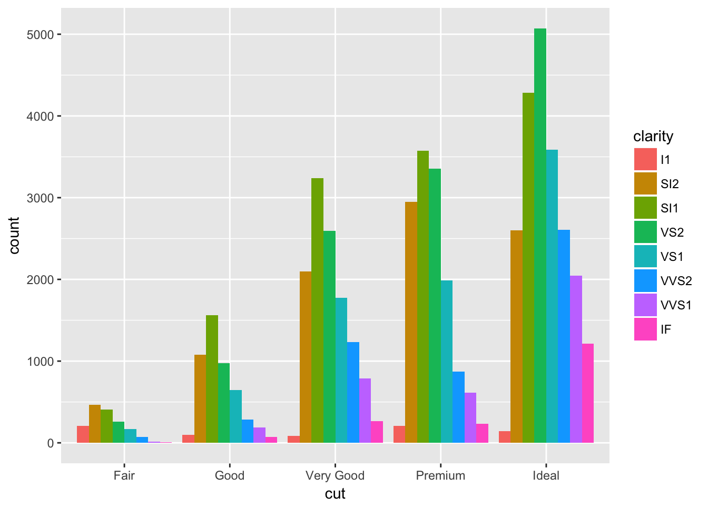

ggplot2的绘图结果是一张静态图片，如果数据信息比较丰富，很难在一张静态的图片上读取精确的结果。plotly是基于javascript实现的可交互式绘图库，其中提供了一个ggplotly()方法，可以方便地将ggplot的静态图片转化为javascript绘图，从而满足交互式绘图需求。
library(plotly)
p <- ggplot(data = diamonds, aes(x = cut, fill = clarity)) +
geom_bar(position = "dodge")
p
ggplotly(p)plotly支持facet，不过当facet的图形超过9个以后，legend处会出现bug。